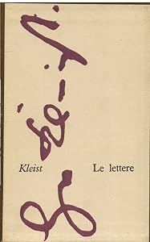
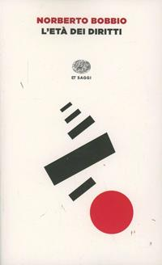
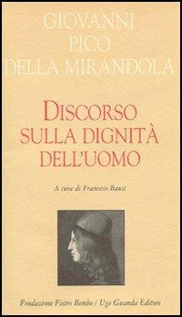
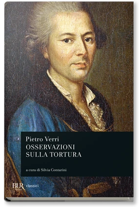

31:45 · 13 OPERE
Etica oligarchica e società occidentale.
Il filo del discorso
Dr Divago sostiene che una società fondata sul massimo privilegio di pochi entri in conflitto con un’etica della pari dignità. La tesi prende forma attraverso una critica del lusso e della distanza fra legalità e giustizia, accompagnata da esempi di guerre e impiego di risorse pubbliche. La riflessione si sposta poi sul ruolo dell’ideologia: l’immagine delle lenti verdi e una voce di Karl Dietrich Bracher sul totalitarismo servono a descrivere strumenti che orientano la percezione dei cittadini.
Leggi la sintesi completaRiduci la sintesi
Il relatore difende una tradizione occidentale centrata sulla libertà di parola e sull’individuo, distinguendola dai crimini di conquista e sfruttamento che attribuisce alle oligarchie. La critica investe anche la rappresentanza europea e il rapporto fra consenso elettorale e decisioni politiche. Nella seconda metà Omero e la Bibbia aprono una genealogia dell’individualità, mentre Bobbio, Marsilio da Padova, Pico, Beccaria, Verri, Kant e Schweitzer compongono un repertorio di riferimenti alla dignità e ai limiti del dominio. La figura platonica del tiranno e il Minotauro diventano immagini della volontà che riduce gli altri a strumenti. Il finale propone il rifiuto della tortura e della pena capitale come criteri etici della civiltà. La scheda presenta questa costruzione come argomento del relatore, distinguendo giudizi morali, verifiche su episodi concreti, controfattuali storici e generalizzazioni sulle culture.
I libri nel discorso

Bibbia
Note sul riferimento
Copertina: San Paolo, 2014 · Nuova Versione dai Testi Antichi · edizione di riferimento
Lettura del primo Salmo; più avanti Adamo e i racconti biblici delle origini.

Lettera a Wilhelmine von Zenge del 22 marzo 1801
Identificazione probabile
Note sul riferimento
Copertina dell’epistolario: COPERTINA DELL’EPISTOLARIO Le lettere, Vallecchi, Firenze, 1962, traduzione, introduzione e note di Ervino Pocar, Collana Cederna. Il catalogo descrive XIX, 543 pagine e 24 tavole, corpus di 222 lettere. Fotografia dell’esemplare antiquario, non copertina di una lettera autonoma.
Copertina autentica dell’epistolario: fondo crema, grande firma in viola, autore e titolo Le lettere leggibili. Il passo è localizzato nella fonte critica al volume IV, pagina 205, del diverso Deutscher Klassiker Verlag; non si attribuisce quella paginazione all’edizione italiana Vallecchi.
Kleist e le lenti verdi: passo riconducibile alla lettera a Wilhelmine von Zenge del 22 marzo 1801, data non pronunciata.
The Freedom of the Press (La libertà di stampa)
Identificazione probabile
Note sul riferimento
Copertina del volume che comprende il saggio: COPERTINA DEL VOLUME CHE CONTIENE IL SAGGIO: Animal Farm, Harvill Secker, 30 agosto 2018, 216 pagine, ISBN 9781787301078. L’editore conferma la presenza di The Freedom of the Press. Il saggio, proposto per il romanzo del 1945, fu pubblicato nel Times Literary Supplement il 15 settembre 1972.
Copertina autentica Harvill Secker blu con grande O arancione. Il riferimento bibliografico riguarda la prefazione inclusa, non una nuova voce duplicata per il romanzo. L’edizione non è attribuita come esemplare usato nel filmato.
Orwell e la libertà di dire ciò che non si vuole ascoltare, localizzata in The Freedom of the Press, titolo non pronunciato.

La tolleranza repressiva
Note sul riferimento
Copertina: Mimesis · Minima / Volti · 2011 · Critica della tolleranza
Copertina dell’edizione italiana del saggio intitolata Critica della tolleranza, firmata dal solo Marcuse. Non è la raccolta Einaudi dei tre autori; nessuna edizione è attribuita al video.
Herbert Marcuse, tolleranza repressiva, metà degli anni Sessanta.

La trahison des images (Ceci n’est pas une pipe)
Note sul riferimento
Riproduzione del dipinto: RIPRODUZIONE DEL DIPINTO The Treachery of Images, 1929, olio su tela, Los Angeles County Museum of Art, inventario 78.7. Acquisto con fondi della collezione Mr. and Mrs. William Preston Harrison. Non è una copertina libraria.
Immagine autentica LACMA, intera: pipa dipinta, iscrizione Ceci n’est pas une pipe e firma Magritte. Copyright indicato dal museo: © C. Herscovici/Artists Rights Society (ARS), New York. La fonte non indica una licenza libera di riutilizzo.
Magritte, la pipa che non è una pipa, frase Ceci n’est pas une pipe.

Odissea
Identificazione probabile
Note sul riferimento
Copertina: Einaudi · ET Classici · 2014
Copertina autentica controllata visivamente. Edizione di riferimento, non identificata come quella usata nel video.
Omero e Ulisse come figure di autonomia; titolo Odissea non pronunciato, collegamento probabile.

L’età dei diritti
Note sul riferimento
Copertina: Einaudi, ET Saggi, 18 luglio 2014, ISBN 9788806223434. Prima edizione Einaudi 1990. Copertina autentica bianca con elementi geometrici neri e cerchio rosso; non è il diverso Destra e sinistra.
Immagine autentica dell’opera, controllata visivamente; l’edizione di riferimento non è attribuita al filmato.
Bobbio, età dei diritti, nel passaggio dalla genealogia dell’individuo ai diritti personali.
Il difensore della pace (Defensor pacis)
Note sul riferimento
Copertina: Cambridge University Press · The Defender of the Peace · 2005 · Annabel Brett
Copertina autentica della traduzione inglese Cambridge 2005 della stessa opera nominata in latino. Non è la copertina dell’edizione BUR e non indica quale edizione conosca il relatore.
Defensor pacis di Marsilio da Padova, esplicitamente incluso nell’elenco.

Discorso sulla dignità dell’uomo
Note sul riferimento
Copertina: Guanda, Biblioteca di scrittori italiani, Fondazione Pietro Bembo, 2003, a cura di Francesco Bausi, 277 pagine, ISBN 9788882464554. Copertina autentica color crema con ritratto, non la copertina di un diverso testo di Pico.
Immagine autentica dell’opera, controllata visivamente; l’edizione di riferimento non è attribuita al filmato.
Discorso sulla dignità dell’uomo di Pico della Mirandola, titolo e autore espliciti.

Dei delitti e delle pene
Note sul riferimento
Copertina: Einaudi, ET Classici, 2018, a cura di Franco Venturi, ISBN 9788806239206. Copertina autentica bianca con titolo rosso e scena illustrata in nero. Prima pubblicazione del saggio nel 1764.
Immagine autentica dell’opera, controllata visivamente; l’edizione di riferimento non è attribuita al filmato.
Dei delitti e delle pene di Beccaria, titolo e autore espliciti.

Osservazioni sulla tortura
Note sul riferimento
Copertina: BUR, 5 aprile 2006, 208 pagine, a cura di Silvia Contarini, ISBN 9788817009638. Copertina ufficiale con ritratto di Verri e fascia scura. Testo steso nel 1777 e pubblicato postumo nel 1804; l’eBook 2013 ha ISBN e paginazione differenti.
Immagine autentica dell’opera, controllata visivamente; l’edizione di riferimento non è attribuita al filmato.
Osservazioni sulla tortura di Verri, titolo e autore espliciti.

Civilization and Ethics (Kultur und Ethik)
Identificazione probabile
Note sul riferimento
Copertina della raccolta: Prometheus · The Philosophy of Civilization · 1987 · raccolta in inglese
Copertina della raccolta Prometheus del 1987 che contiene The Decay and Restoration of Civilization e Civilization and Ethics. I due saggi, originariamente distinti, restano voci separate. L’edizione in inglese dell’immagine non è attribuita al video.
Albert Schweitzer, reverenza per la vita; rinvio probabile a Kultur und Ethik, senza titolo pronunciato.

La Repubblica
Identificazione probabile
Note sul riferimento
Copertina: Laterza · La Repubblica · edizione con testo a fronte di riferimento
Immagine associata all’ISBN di riferimento e controllata visivamente; edizione e traduzione non identificate come quelle citate o lette nel video.
Platone e il tiranno dominato dai desideri, riconducibile al libro IX della Repubblica; titolo non pronunciato.